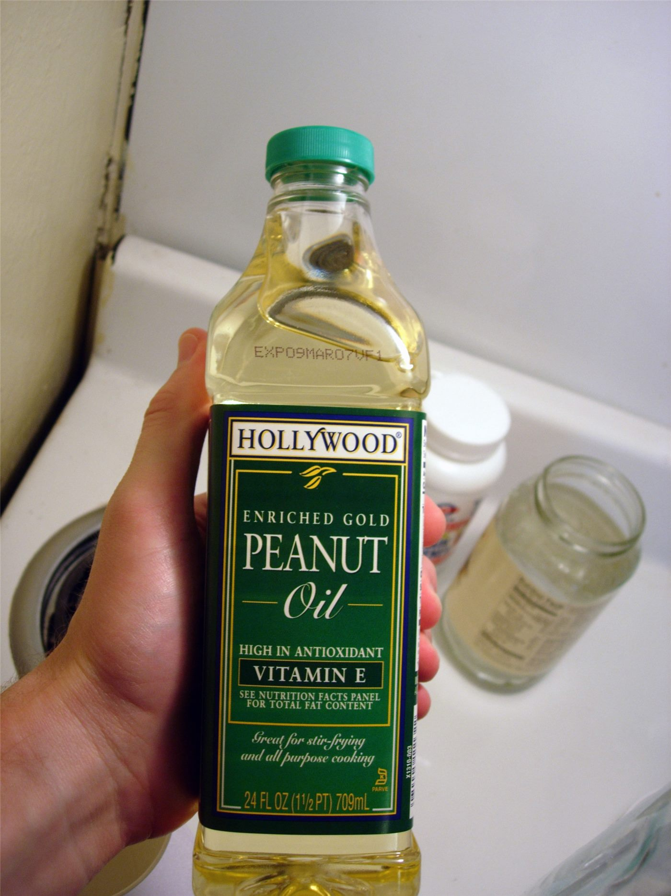

타이베이시, 흑임자유·참기름 4건서 벤조피렌 초과 검출… 예방적 회수
타이베이시가 시중 유통 참기름류를 확대 검사한 결과, 흑임자유와 특급 참기름 등 4건에서 벤조피렌이 기준을 초과했다. 해당 제품은 예방 차원에서 매대에서 내려졌다.
형덕창 기자 · 2026.09.08
橋대만

타이베이시 위생당국이 시중 유통 참기름류를 확대 검사한 결과, 흑임자유와 특급 참기름을 포함한 4건에서 벤조피렌 함량이 기준을 넘긴 것으로 나타났다.
광고 문의 · 300×250벤조피렌은 유지류를 고온에서 볶거나 압착하는 과정에서 생성될 수 있는 물질이다. 참깨를 강하게 볶는 전통적인 제조 방식에서는 온도 관리가 관건으로 지목돼 왔다.
당국은 해당 제품을 예방적으로 매대에서 내리도록 했다. 유통 경로 추적과 제조업체 조사도 함께 진행된다.
참기름은 한국·중국·대만 가정 모두에서 상시 사용하는 조미료다. 소량을 오래 쓰는 특성상, 회수 대상 제품이 가정에 남아 있을 가능성이 있다.
소비자는 제품 표시의 제조번호와 유통기한을 확인하는 것이 권고된다. 구매처를 통한 반품 절차가 안내된다.
타이베이시는 최근 식품 검사 범위를 넓혀 왔다. 유지류 외에 건조 식품과 조미료 전반이 점검 대상에 포함돼 있다.
출처·참고 (사실 확인용 — 본문은 직접 재작성)
· https://udn.com/news/story/7266/9739973
· https://udn.com/news/story/7266/9739973